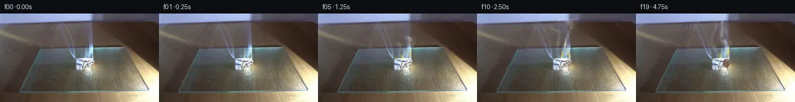

![首帧]()

Round 00
2026-11-05T15:25:36.768921+00:00像素候选变化代码 +241/−0inspection 更新
pixels acd26bac46236006 · code 1b277897bbc0c864
查看本轮 generate.py 真实 diff
--- previous/generate.py
+++ current/generate.py
@@ -0,0 +1,241 @@
+"""Deterministic photograph-based PixelWorld continuation; local numeric rendering only."""
+from pathlib import Path
+import json
+import numpy as np
+from PIL import Image, ImageDraw
+from scipy.ndimage import gaussian_filter, map_coordinates
+from artifact_io import save
+
+ROOT = Path(__file__).resolve().parent
+W, H, S = 256, 144, 3
+base8 = np.asarray(Image.open(ROOT/'first_frame.png').convert('RGB'))
+base = base8.astype(np.float32)
+y, x = np.mgrid[:H, :W].astype(np.float32)
+Y, X = np.mgrid[:H*S, :W*S].astype(np.float32)/S
+rng = np.random.default_rng(140)
+
+
+def smooth(a, b, q):
+ z = np.clip((q-a)/(b-a), 0, 1)
+ return z*z*(3-2*z)
+
+
+def reduce(a):
+ if a.ndim == 2:
+ return a.reshape(H, S, W, S).mean((1, 3))
+ return a.reshape(H, S, W, S, 3).mean((1, 3))
+
+
+def over(a, color, alpha):
+ return a*(1-alpha[..., None])+np.asarray(color)*alpha[..., None]
+
+# Reconstruct only thin cool-colored rising detail with horizontal neighboring pixels.
+# The wider cool background at the top remains entirely photographic.
+left_center = 109.0 + .205*(y-16)
+right_center = 145.2 + .025*(y-16)
+left = np.exp(-((x-left_center)/2.3)**4)*smooth(13, 19, y)*(1-smooth(69, 73, y))
+right = np.exp(-((x-right_center)/5.0)**6)*smooth(11, 18, y)*(1-smooth(69, 73, y))
+mask = np.maximum(left, right)
+plate = base.copy()
+for row in range(H):
+ for center, radius, m in [(left_center[row,0], 5.5, left[row]),
+ (right_center[row,0], 9.5, right[row])]:
+ lo = int(np.clip(center-radius, 0, W-1))
+ hi = int(np.clip(center+radius, 0, W-1))
+ lo_rgb = np.median(base[row,max(0,lo-2):lo+1],axis=0)
+ hi_rgb = np.median(base[row,hi:min(W,hi+3)],axis=0)
+ u = np.clip((np.arange(W)-lo)/(hi-lo),0,1)
+ reconstructed = lo_rgb[None,:]*(1-u[:,None])+hi_rgb[None,:]*u[:,None]
+ # Retain a small amount of sensor/wood texture through the reconstruction.
+ reconstructed += (base[row]-gaussian_filter(base, (0,.8,0))[row])*.22
+ plate[row] = plate[row]*(1-m[:,None])+reconstructed*m[:,None]
+residual = base-plate
+
+# Procedural smoke is integrated as a scalar density advected in a buoyant curl flow.
+# Supersampling resolves wisps finer than the target pixels.
+density = np.zeros((H*S,W*S),np.float32)
+noise = gaussian_filter(rng.normal(size=density.shape).astype(np.float32),2.3)
+noise /= max(noise.std(),1e-8)
+noise2 = gaussian_filter(rng.normal(size=density.shape).astype(np.float32),8)
+noise2 /= max(noise2.std(),1e-8)
+noise3 = gaussian_filter(rng.normal(size=density.shape).astype(np.float32),.85)
+noise3 /= max(noise3.std(),1e-8)
+
+# Paper-only region follows the bright photographic folds, with a slow char front.
+# Its outline and all supporting board pixels are preserved.
+paper = np.zeros((H,W),np.float32)
+poly = Image.new('L',(W,H),0)
+ImageDraw.Draw(poly).polygon([(122,74),(134,72),(149,74),(151,79),(148,86),
+ (145,91),(136,90),(133,85),(124,90),(122,86)],fill=255)
+paper = np.asarray(poly).astype(np.float32)/255
+paper *= smooth(108,165,base.mean(2))
+char_detail = gaussian_filter(rng.normal(size=(H,W)).astype(np.float32),.45)
+char_detail /= max(char_detail.std(),1e-8)
+
+
+def advect(t, dt):
+ global density
+ altitude = np.maximum(0,68-Y)
+ center = 143 - .11*altitude + 2.2*np.sin(altitude/14-1.7*t)
+ # A modest divergent expansion superposed on two rotating stream-function modes.
+ phase1 = .115*X+.12*Y+1.65*t
+ phase2 = -.18*X+.10*Y-2.0*t
+ vx = -1.6 + .085*(X-center) + 4.5*np.cos(phase1)+2.2*np.sin(phase2)
+ vy = -21 - 4*smooth(0,40,altitude) - 4.3*np.cos(phase1)+3.7*np.sin(phase2)
+ vx += 2.1*np.sin(Y/7+X/15+2.8*t)
+ vy += 1.5*np.cos(X/7-Y/13-2.0*t)
+ density = map_coordinates(density,[(Y-vy*dt)*S,(X-vx*dt)*S],
… diff truncated; 154 more lines …